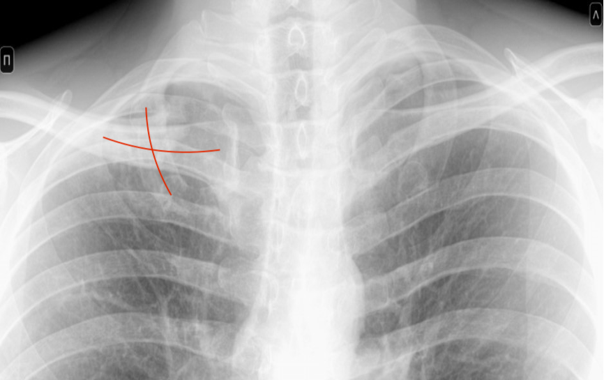

Примеры из практики с визуализацией
Пациент "А" — своевременное выявление
Пациент "А".
Попробуйте найти изменения самостоятельно
Область изменений на флюорографии пациента "А" выделена красным

Подсказка: Обратите внимание, как справа на изображении хорошо видны границы ключицы и рёбер, а слева на изображении граница рёбер и ключицы выглядит не так четко. Границы размыты, потому что под ними в легочной ткани видны изменения.
3D КТ-сканирование того же пациента "А".

Теперь посмотрите на 2D КТ-сканирование того же пациента "А".
«КТ позволяет заглянуть внутрь организма с такой детализацией, которая недоступна для обычного рентгена, поэтому мы находим проблему даже на ранней стадии.»